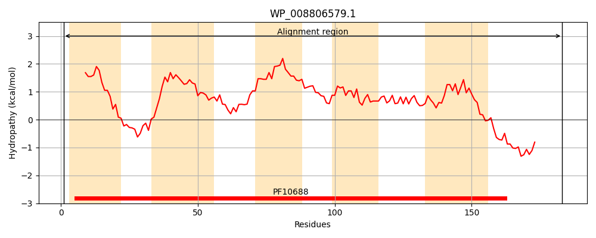
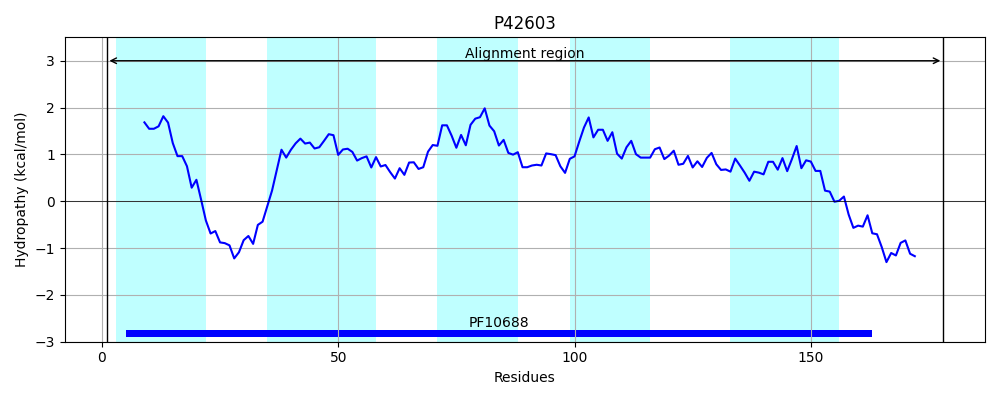
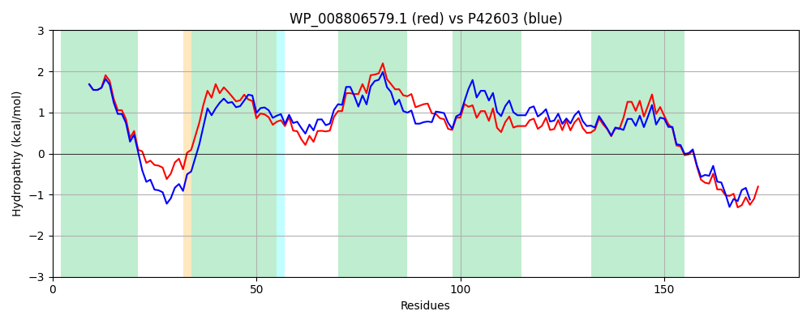

Hit Accession: P42603
Hit TCID: 9.B.221.1.1
Hit Description: gnl|BL_ORD_ID|10475 gnl|TC-DB|P42603|9.B.221.1.1 Inner membrane protein YgjV OS=Escherichia coli (strain K12) GN=ygjV PE=1 SV=1
Mach Len: 183
e:0.000000
Query TMS Count : 5
Hit TMS Count: 5
TMS-Overlap Score: 5.100000
Predicted Substrates:None
BLAST Alignment:
Score: 719 , Bit scores: 281 bits, E-value: 3.0e-98, Alignment length: 183, Percentage identity: 75
Query: 1 MTAYWLAQGVGVIAFLIGITTFINRDERRFRLQLAVYSAIIGVHFFLMGAGSAGMSAGLNALRTVISLRTRSLWVMTVFILLTLILGLGKLQHAMELLPIIGTVASTWALFRCKGLTVRCVMWCSTACWVTHNLWLGSIGGTLIEGSFLIVNGLNIIRFRRMQKRGIDPFKVENAVQEESPSA 183
MTAYWLAQGVGVIAFLIGITTF NRDERRF+ QL+VYSA+IGVHFFL+G AG SA LNA+RT+I+LRTRSLWVM +FI+LT +GL K H +ELLP+IGT+ STWALF CKGLT+RCVMW ST CWV HN W GSIGGT+IEGSFL++NGLNIIRF RMQKRGIDPFKV E++PSA
Sbjct: 1 MTAYWLAQGVGVIAFLIGITTFFNRDERRFKKQLSVYSAVIGVHFFLLGTYPAGASAILNAIRTLITLRTRSLWVMAIFIVLTGGIGLAKFHHPVELLPVIGTIVSTWALFCCKGLTMRCVMWFSTCCWVIHNFWAGSIGGTMIEGSFLLMNGLNIIRFWRMQKRGIDPFKV-----EKTPSA 178 | Protein Hydropathy Plots: |
|---|
|  |  |
Pairwise Alignment-Hydropathy Plot:
|
|---|
|  |